地产公众号造假有多严重
今天的这篇文章，建议各房企的审计监察们要认真看完，有一些实用建议。
近年来，自媒体的风口先后刮过微博、公众号等图文类和短视频、直播。
微博的数据造假已无需多言，各官媒早已将其按在地板上摩擦许久；短视频和直播数据造假，最近官媒也再三点评；公众号的数据造假，讨论热度相对较低。
在写这篇文章之前，认真算了算，预感要得罪9成的地产公众号，这简直是掀桌子，不让吃饭。所以，如果被围攻，莫要惊讶。
在写这篇文章之前，天机查了地产行业排名前100的公众号和50个区域性地产公众号， 共150个，只有16个阅读曲线没问题 。
NO. 1｜壹
今年，排名前四的某房企华北地区，一位品牌部总监捞了一千多万，集团居然放过，没有处理。这位品牌总监 跳槽去了重仓大亚湾的Top30房企。
这显然是该房企的经典作风，此前，曾放过长三角地区数位捞钱数千万的中高管。
后来，顺着这条线，我们深挖了一些房企品牌部的事，嗯，触目惊心。
正常来说，品牌部投放的费用，占大头的是买排行榜，其次就是各媒体投放。公众号受益于腾讯这个天量且相对闭合的流量体系，成为最有价值的自媒体平台。
因此，公众号自然是房企品牌部投放的重中之重。然而，这里的猫腻实在太多。
首先，很多品牌部投放，会优先考虑阅读量，找个阅读量较大，影响力较大的号投放广告。很多人说财经自媒体赚钱，其实地产自媒体更赚钱，而且门道多。
一般来说，全国性大号，稳定一万阅读，能接的房企广告费3-5万/篇，阅读量稳定2-3万的，是另一个档期；阅读量稳定5万以上的，奔着15-20万去。
大致如此，偏差不大，因为不少房企曾给天机开20-25万/篇，咱都没有接，主要是怕大家失望，不能变成软骨头，所以恰着几毛钱的饭，一个房企的广告都没有。这也是今天能如此坦然写出来的原因，哈哈。
广告费投放中，品牌部有些常拿回扣，比如稳定1万的阅读，投放费用5万，这种明显就有回扣，回扣约1-2万。而大号的回扣一般是20-30%
NO. 2｜贰
其次，很多地产公众号，是房企品牌部自控和关联的马甲。
这类公众号平时的阅读量都不高，一二条文章的阅读比例失衡，比如个别区域型地产号，头条阅读量刷五六千，套走房企一两万广告费，二条一两百阅读量，造假都这么不认真。
房企品牌部的蛀虫们将公司的宣广软文投放到这些马甲公众号上，然后，刷阅读，平均一万阅读，大致170-280元。
也就是说，这些人，用了不到300元，就套走了公司3-5万/篇的广告费。每次、每月、每年，房企投放的宣广软文，可谓 天量。
轻轻松松套走公司数千万，吃饭喝水一般简单。
然后，回到开头说的，那些全国性地产大号，你以为你看到的那些文章，一两万、三五万阅读量就是真的么？
分分钟教你做人，他们也刷量，真正的阅读量不过两三千。说到这里，就到了上图说话的环节。
先来看正常的阅读曲线应该是什么样的：
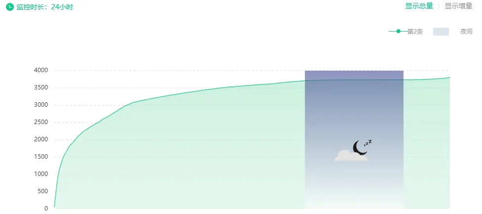
这是正常的阅读曲线图，早上8点30分发文，阅读量呈曲线，弧形面平滑向上，没有大起大落。浅蓝色阴影部分，代表0:00-6:00，是多数阅读者睡眠时间。
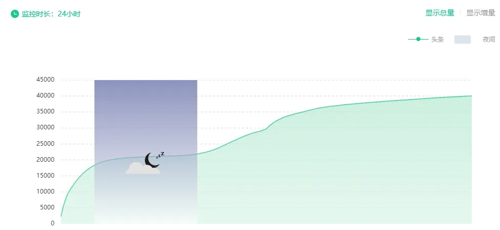
这也是正常的阅读曲线，因为发文时间是22点，渡过了睡眠时间后，第二天6-12点，阅读量曲线又平滑向上爬升。
NO. 3｜叁
到了这，就应该看不正常的阅读曲线，在这，以几个行业知名号为例。
所以，房企买榜是自愿的，因为融资需要。而把一些自媒体主当爷一样供着，就很荒唐。房企是销售额造假，他们是阅读量造假，都是数据造假，物以类聚人以群分。
这些号各有故事，但相同的点是，房企的宣广软文多。别看一两万阅读，真实的阅读量顶多三四千。
有个女性做的公众号，曾是某闽系 房企 的御用公众号，一篇软文5-8万。 后来这房企的营销总经理跳槽，该公众号就很少接该房企的广告，关系断了。我们先看这个号的阅读曲线：
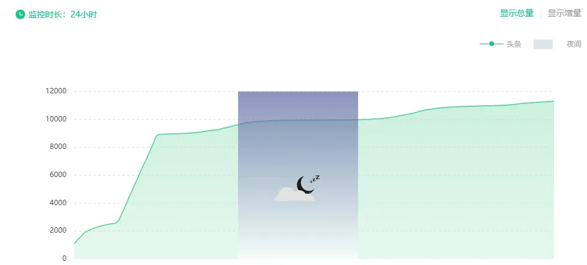
15点发文的，阅读曲线呈锯齿状和断崖式上升状，急剧爬升。再来看看她的阅读时段分布：
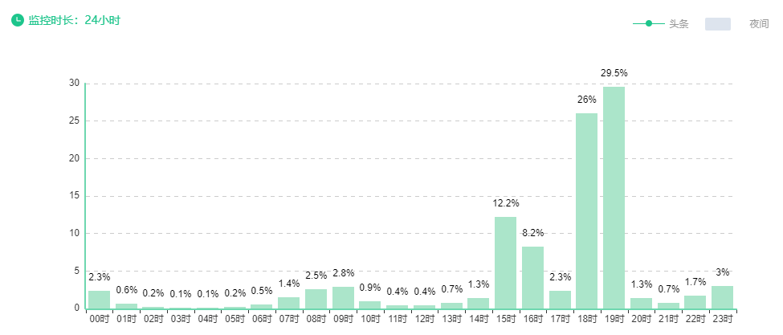
有较大数量粉丝的公众号，最大的阅读量，来自于刚发文的第一小时，这个小白也知道啊，但这个号的阅读量最大的时间段，是发文后4-5小时，属于补量，因为第三小时的阅读量已经很明显衰减。
再来看一个刷量的地产公众号：
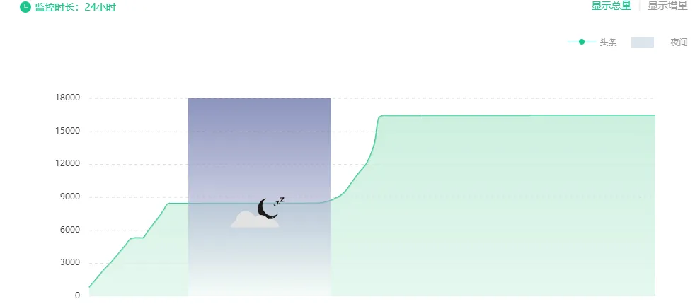
这个同一篇文章刷了两次，19点发文，到了21点，阅读量衰减，隔了一小时，阅读量又增长率过高，继续爬升，然后平线无增长进入睡眠时间，第二天早上7-8点，补刷，急剧爬升，之后呈平线，无增长。
这个号刷得更狠，平时的阅读量都是0%，只有两段凸显：
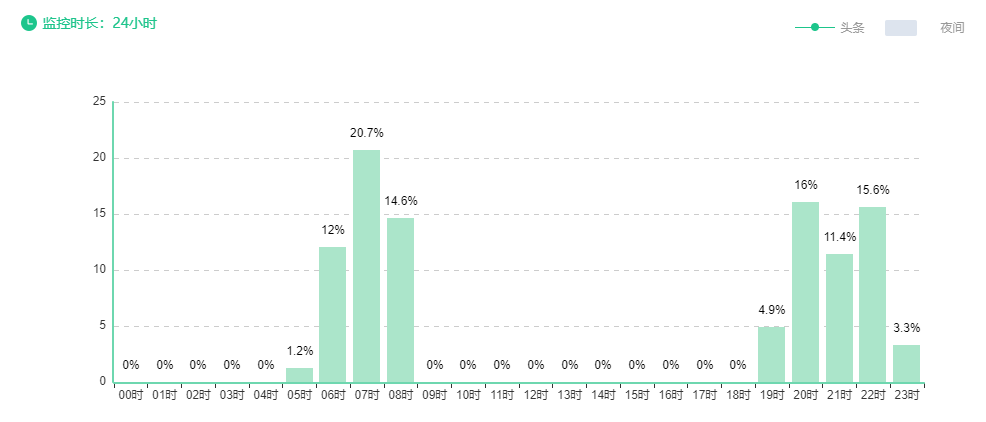
再来看上海一个地产知名大号，有时也刷量：
先看他平时文章正常的阅读曲线，是这样，曲线很光滑，没有明显锯齿状：
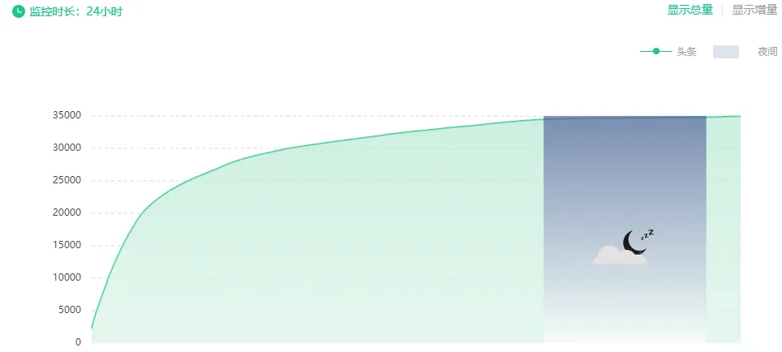
这是他刷量的文章阅读量曲线：
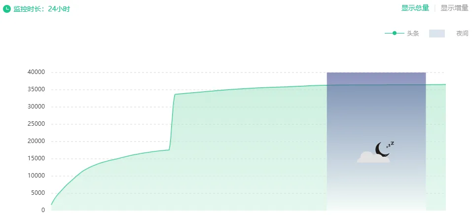
阅读曲线呈断崖式，急剧爬升，阅读时段分布是这样的：
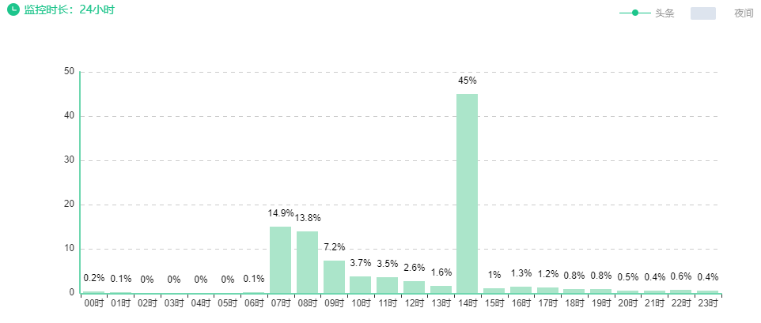
NO. 4｜肆
可能有人说，他们是把文章在短时间内转发朋友圈和社群，才导致这样。
嘿嘿，这个，天机自个早就试验过了。
微信群现在大家都不怎么看了，就以粘性最高的微信朋友圈来说，今年一月下旬，16个满员微信号，7个未满员微信号，总共约9.5万好友，然后，在半小时内把文章转发全部微信的朋友圈，会怎么样？
阅读曲线是这样的，仅能砸出一个非常小凹点：
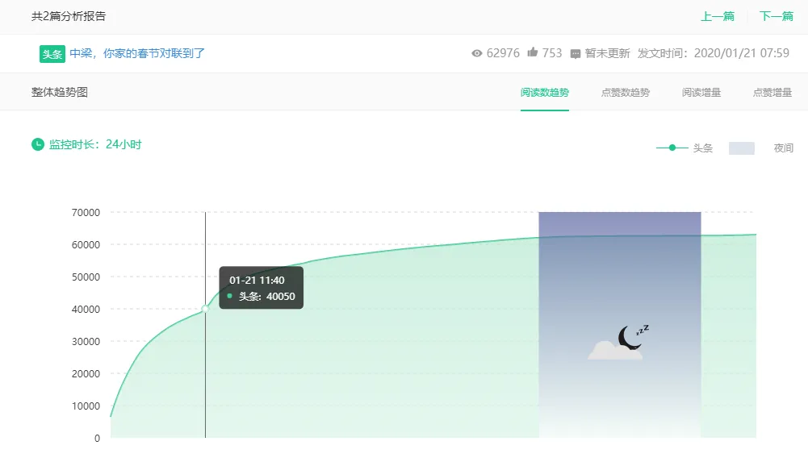
平时的阅读曲线是这样的，阅读曲线呈弧形向上爬升，弧面光滑，直达10万+，10万+后都是显示一条直线：
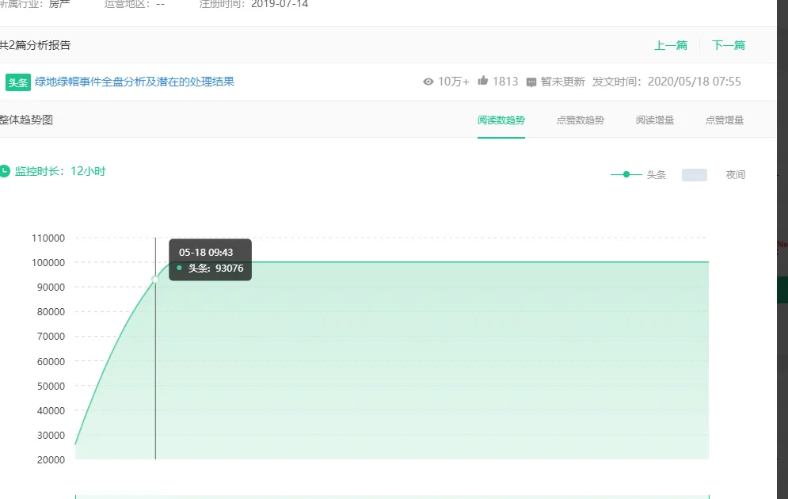
所以，在此建议，各房企的审计监察们，可以用这个来查品牌部的费用投放有无问题，经常投放的如果是一些劣质的阅读量不稳定的刷量公众号，基本上都有问题。
这些蛀虫，内外勾结，或拿回扣，或用马甲公众号套走公司品牌、营销费用。严抓严打，每年能省下大几千万、乃至上亿利润。
当然，不排除一些房企和一些地产公众号，一个愿打一个愿挨，那就是另外一码事了。
如果腾讯能严格执行，把所有刷量的公众号永久封禁，那自然更好。
“三道红线”两年后执行，如今跑规模获取更大利润已然希望渺茫，但还有两年的时间，各房企们可以向管理要利润，组建精干的审计监察团队，以雷霆手段，清扫蛀虫。
此中，可获取的利润将极其庞大。
如今的房企，又要被客户和业主骂黑心，又要被员工骂压榨，基层和高层收入马太效应凸显，高管年薪过亿，基层年薪数万。
长此以往，基层员工越来越丧，还有心气干活？从严审计，深度监察，挤压出来的庞大利润，哪怕拿10%给基层员工节假日包个小红包，整体的精神面貌都会不一样。
就说到这吧，相信读者们都很聪明，一点就通，已经学会辨别。如果喜欢，文末帮忙点个“在看”。欢迎留言区一起侃大山。
文末左下角的 “ 阅读原文 ”，可找组织，防失联。请点文章右下角的“ 赞 ”和“ 在看 ”，据推送规则，每次更新才会第一时间出现在你的订阅列表里。
按日期浏览全部来源（同日按条目标识排序）